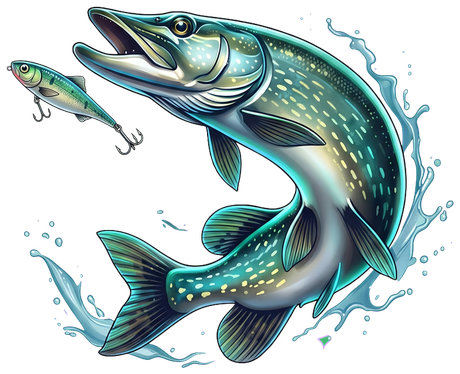

SOS
17

КЛЁВ
PRO 2.0
ТАКТИЧЕСКАЯ ЭКОСИСТЕМА РЫБАЛКИ
Инициализация гидролокатора и батиметрии...
8%
ОНЛАЙН
КЛЁВ ПРО АДМИН
Консоль D1 • Бета-тест • 152-ФЗ
ID: FP_89VIP089
Ямало-Ненецкий АО
1. Сервер
2. Бета·ID
3. Чаты·Точки
4. 152-ФЗ·ИБ
ИНСТРУМЕНТЫ И РАЗДЕЛЫ
Онлайн • Офлайн-карты
Тёмная
Светлая
OLED
Стекло
Обычный
Свайп вправо или 2 сек для SOS